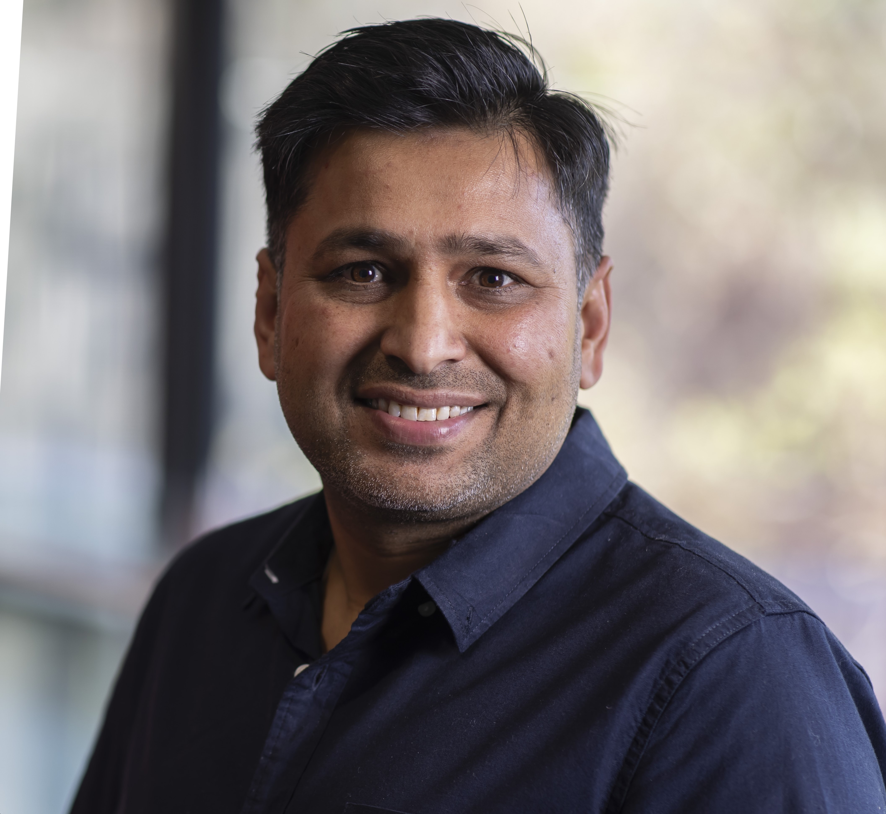

Assoc. Prof. Imran Razzak
Mohamed bin Zayed University of Artificial Intelligence (MBZUAI), UAE
Bio: Dr. Imran Razzak is an Associate Professor of Computational Biology at Mohamed bin Zayed University of Artificial Intelligence (MBZUAI), Abu Dhabi, UAE, where he also leads the GenMI Research Lab. His research lies at the intersection of human-centered AI, personalized medicine, medical imaging, and multimodal clinical intelligence, with a strong focus on developing trustworthy AI systems that integrate visual understanding, clinical reasoning, spatial grounding, genomics, electronic health records, and multi-omics data to support diagnosis, prognosis, and patient-specific decision-making. Before joining MBZUAI, he served as an Associate Professor in Human-Centered Machine Learning at the University of New South Wales (UNSW), Australia. Dr. Razzak has built a strong international research profile in medical AI, deep learning, computational biology, natural language processing, and multimodal learning, with publications in leading journals and conferences including CVPR, ACL, MICCAI, IEEE TMI, Medical Image Analysis, and IEEE TNNLS. He has authored more than 250 peer-reviewed publications, achieved an h-index of 65 with over 18,000 citations, and secured more than $15 million in research funding. His work contributes to the development of robust, explainable, and clinically useful AI systems for early disease detection, precision healthcare, medical image interpretation, and end-to-end intelligent healthcare workflows.